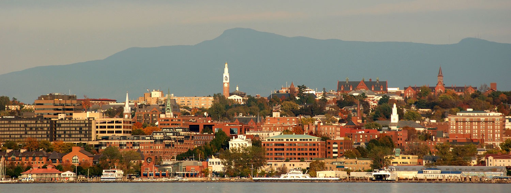

You've arrived in Burlington!
You go up to Burlington, and the area looks so cute. You head to their infamous Farmer's Market up there, and you quickly discover that it is infamous for a reason. They have everything over there food, drinks, music, art and craft, and more. You make a point to experience all of what the market has to offer.
I love Burlington. The city is small and close together. Yet it's the size of a proper city. Where should I go now?
-
Go home I need to explore NYC more in depth to do a true compare and contrast on NYC and Burlington
-
Go explore more cities that are completly differnt that NYC.
